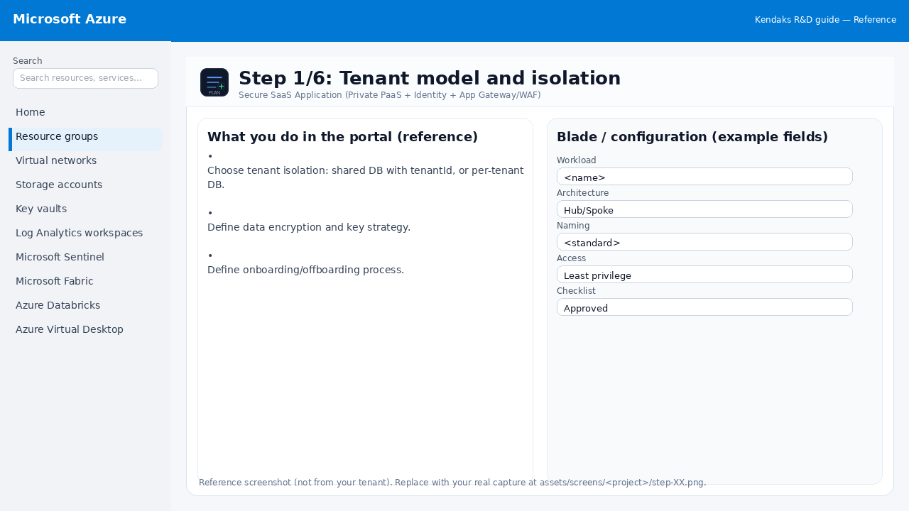
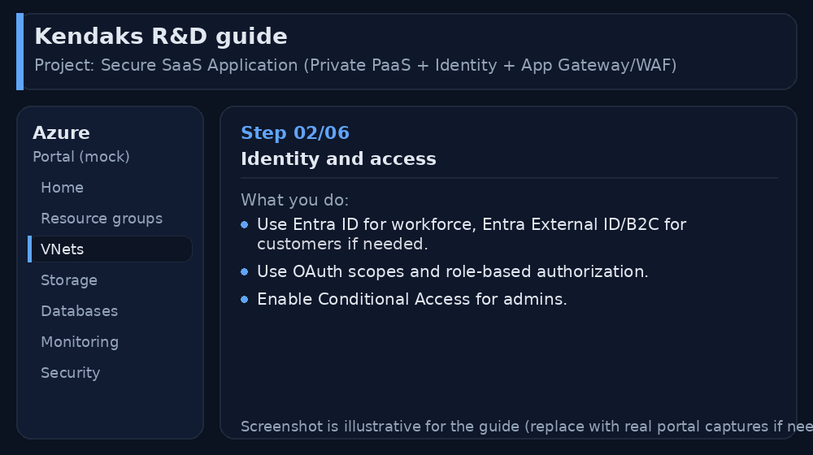
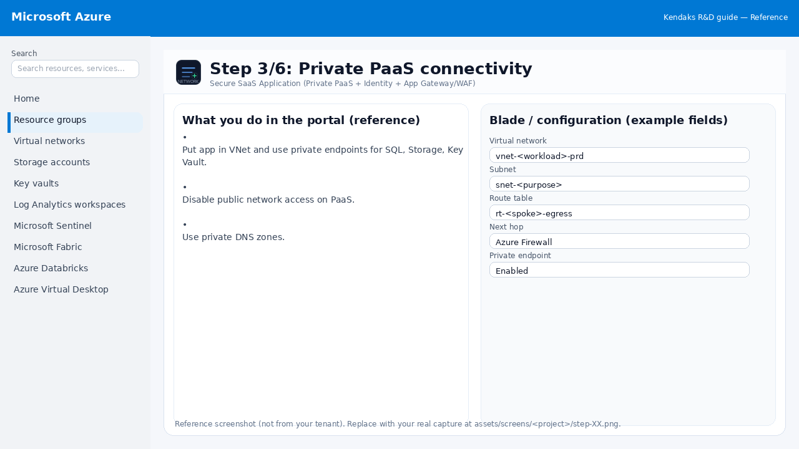
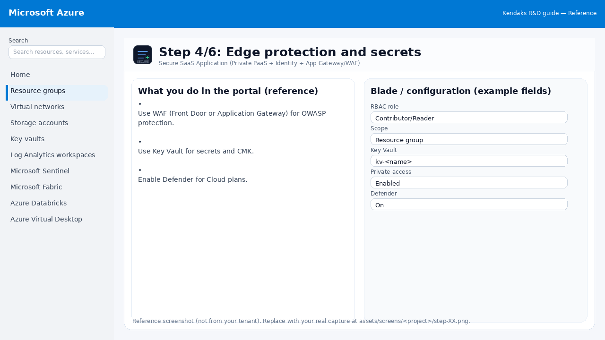
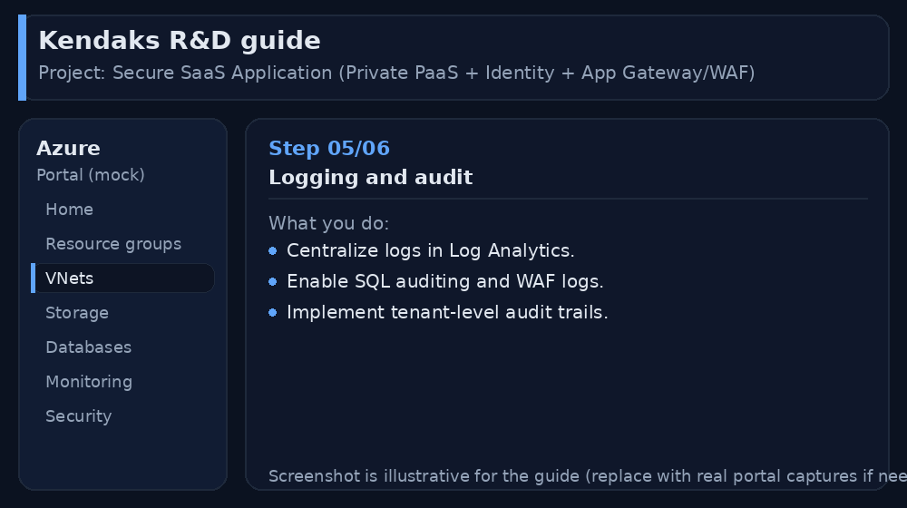
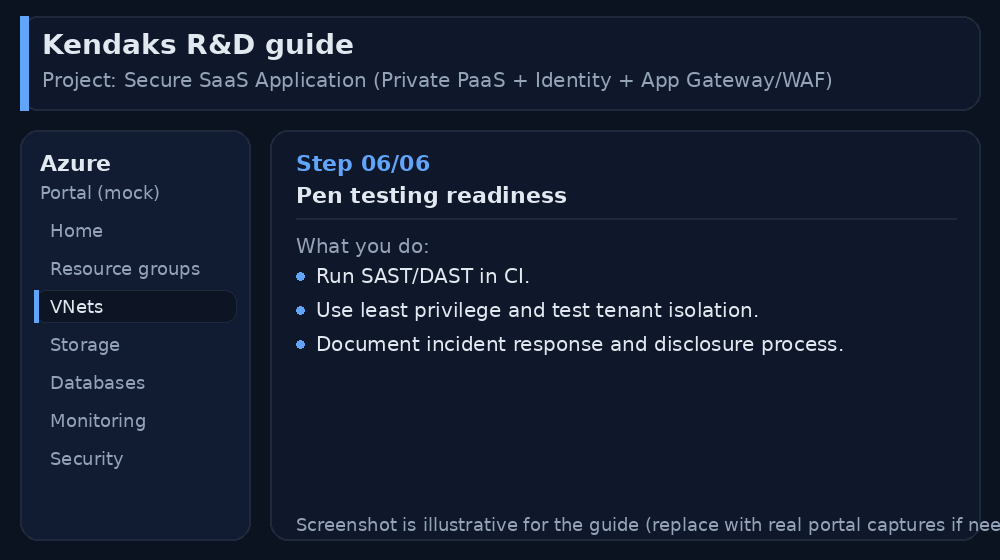

Secure SaaS Application (Private PaaS + Identity + App Gateway/WAF)
Category: Security & Architecture
Scenario: A multi-tenant SaaS must isolate tenants and secure PaaS. Example: 'Kendaks SaaS' uses private endpoints, WAF, and strong identity.
Architecture diagram
High-level view of the main components and data/control flows.
Low-level architecture diagram (Visio-style)
Implementation view (networking, security, ops). Click to open full size.
Low-level architecture details
(No low-level text provided.)
Step-by-step implementation
Step 1/6

Tenant model and isolation

Reference portal screenshot (click to zoom). Replace with your tenant capture if needed.
- Choose tenant isolation: shared DB with tenantId, or per-tenant DB.
- Define data encryption and key strategy.
- Define onboarding/offboarding process.
Validation checklist
- Stakeholders have signed off the scope, SLAs, and data/security requirements.
- You have documented naming standards, environments, and ownership (RACI).
Step 2/6

Identity and access

Reference portal screenshot (click to zoom). Replace with your tenant capture if needed.
- Use Entra ID for workforce, Entra External ID/B2C for customers if needed.
- Use OAuth scopes and role-based authorization.
- Enable Conditional Access for admins.
Validation checklist
- Entra groups/roles are configured; privileged roles protected via PIM.
- Conditional Access/MFA policies are enforced for relevant access paths.
Step 3/6

Private PaaS connectivity

Reference portal screenshot (click to zoom). Replace with your tenant capture if needed.
- Put app in VNet and use private endpoints for SQL, Storage, Key Vault.
- Disable public network access on PaaS.
- Use private DNS zones.
Validation checklist
- The target VNet/subnets/peerings/UDRs/NSGs are deployed with no errors.
- Connectivity test passes (e.g., Network Watcher connection troubleshoot / ping between subnets where allowed).
- Egress is controlled (traffic observed in Firewall logs if applicable).
Step 4/6

Edge protection and secrets

Reference portal screenshot (click to zoom). Replace with your tenant capture if needed.
- Use WAF (Front Door or Application Gateway) for OWASP protection.
- Use Key Vault for secrets and CMK.
- Enable Defender for Cloud plans.
Validation checklist
- Security baseline applied (Defender/Policy/WAF/Firewall rules as applicable).
- No public endpoints unless explicitly approved; private endpoints verified where applicable.
- Alerts are configured for high-risk events.
Step 5/6

Logging and audit

Reference portal screenshot (click to zoom). Replace with your tenant capture if needed.
- Centralize logs in Log Analytics.
- Enable SQL auditing and WAF logs.
- Implement tenant-level audit trails.
Validation checklist
- Logs and metrics are flowing (check Log Analytics / Monitor).
- Alerts trigger correctly (test alert path to email/Teams/ITSM).
Step 6/6

Pen testing readiness

Reference portal screenshot (click to zoom). Replace with your tenant capture if needed.
- Run SAST/DAST in CI.
- Use least privilege and test tenant isolation.
- Document incident response and disclosure process.
Validation checklist
- UAT completed with representative users and scenarios.
- Performance meets baseline; issues tracked and remediated.